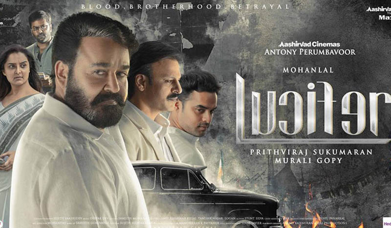

Lucifer Review by Abhijith A G

Posted By : Abhijith A G | Date : 31-03-2019
Genre: Drama /Thriller
Language: Malayalam
Year: 2019
മുരളി ഗോപിയുടെ കഥയിൽ ലാലേട്ടൻ ഫാനായ പൃഥ്വിരാജിന്റെ ആദ്യ സംവിധാനം ലൂസിഫറായി ലീഡ് റോളിൽ ലാലേട്ടൻ ഒപ്പം മഞ്ജുവും ,ടോവിനോയും,പൃഥ്വിയും കാസ്റ്റിംഗിലും പിന്നണിയും കഴിവുള്ളവർ അണിനിരന്ന സിനിമ അതാണ് ലൂസിഫർ.
രാഷ്ട്രീയത്തിലെ ശക്തനായ നേതാവും മുഖ്യമന്ത്രിയുമായ പി കെ രാംദാസ് മരിക്കുന്നു. പകരം അടുത്ത മുഖ്യമന്ത്രി ആരാണ് എന്ന ചോദ്യം പാർട്ടിയിലും മീഡിയയിലും നാട്ടിലും ഉയരുന്നു. രാംദാസിനൊപ്പം കൂടെയുണ്ടായിരുന്നവരും കുടുംബത്തിലെ അംഗങ്ങളും മുഖ്യമന്ത്രി കസേരക്കും മറ്റുസ്ഥാങ്ങൾക്കും പാർട്ടിയിൽ അടിതുടങ്ങുന്നു. അത്തരമൊരു അവസ്ഥയിലാണ് രാംദാസിന്റെ ശിഷ്യനായിരുന്ന സ്റ്റീഫൻ നെടുമ്പള്ളിയുടെ വരവ്. പാർട്ടിയിലെ പലർക്കും കുടുംബത്തിലുള്ളവർക്കും സ്റ്റീഫനെ ഇഷ്ടമില്ല മാത്രമല്ല അവർക്ക് സ്റ്റിഫൻ സ്ഥാനമാനങ്ങൾ ചോദിക്കുമോ എന്നും ഭയമുണ്ട് ജനങ്ങൾക്കിടയിൽ സപ്പോർട്ട് ഉള്ള സ്റ്റിഫൻ ഒന്നുകിൽ അവരുടെ കൂടെ വേണം അതുമല്ലെങ്കിൽ അവനെ ഇല്ലാതെയാക്കണമെന്നാണ് അവരുടെ ലക്ഷം എന്നാൽ നമ്മുടെ സ്റ്റീഫൻ അവർ വിചാരിച്ച ആളല്ല പഠിച്ച കള്ളനാണ്. സ്റ്റീഫന്റെ അതായതു നമ്മുടെ സാത്താന്റെ കളി അവർ കാണാൻ കിടക്കുന്നതെ ഉള്ളു ആരാണ് യഥാർഥത്തിൽ സ്റ്റീഫൻ എന്താണ് അവന്റെ ലക്ഷ്യം അതാണ് സിനിമ പറയുന്നത്.

ആദ്യ പകുതി പതിഞ്ഞ താളത്തിലാണ് തുടങ്ങുന്നത് ലാലേട്ടൻ എത്തുന്നതോടെ അല്പം വേഗത്തിലാവുന്നു സിനിമ. പണ്ടുമുതലേ നമ്മളെയൊക്കെ ആവേശത്തിൽ ആക്കുന്ന ലാലേട്ടന്റെ സ്ഥിരം മാനറിസങ്ങൾ നിറഞ്ഞതാണ് ആക്ഷൻ രംഗങ്ങൾ എന്നാൽ അത് മാത്രമായി ഒതുക്കിയില്ല അതാണ് മുരളി ഗോപിയുടെ കഥയുടെയും പൃഥ്വിയുടെയും സംവിധാനത്തിന്റെ കഴിവ്.രണ്ടാം പകുതിയിൽ സിനിമ കുറച്ചുകൂടെ വേഗത്തിലാണ് നീങ്ങുന്നത് സ്റ്റീഫൻ നെടുമ്പള്ളിയെ നമ്മൾ കൂടുതൽ മനസിലാക്കുന്നതും ചെറിയ ട്വിസ്റ്റുകളുമൊക്കെയായി ത്രില്ലിംഗ് ആയിട്ടുള്ളതുമാണ് രണ്ടാം പകുതി. മികച്ച കാസ്റ്റിംഗ് മാത്രമല്ല സിനിമയിലെ എല്ലാരും കിട്ടിയ റോൾ നന്നായി ചെയ്തു ലാലേട്ടൻ സ്റ്റീഫനെ മനോഹരമാക്കിയപ്പോൾ വില്ലനായി വന്ന വിവേക് ഒബ്റോയ് അദ്ദേഹത്തിന് ശബദം കൊടുത്ത വിനീത് , മഞ്ജു എന്നിവരും ചെറിയ റോളുകൾ ചെയ്ത ടോവിനോ,ബൈജു & ഷാജോൺ.
നെഗറ്റീവായി തോന്നിയത് ക്ലൈമാക്സ് രംഗത്തിനു മുൻപേ വരുന്ന ഐറ്റം സോങ് ആവശ്യമില്ലായിരുന്നു. ബിജിഎം നന്നായില്ല .ലാലേട്ടന്റെ ഹീറോയിസും കാണിക്കാനും ഫാന്സിസും ആഘോഷിക്കാനും മാത്രമുള്ള സാദാരണ മാസ്സ് പടം എന്ന് സ്ഥിരം ലേബലിൽ ആവാതെ ഇന്ത്യൻ രാഷ്ട്രീയത്തെ ആക്ഷേപ രൂപത്തിൽ കളിയാക്കാനും ചിത്രത്തിന്റെ അവസാനം നമ്മുക്ക് നല്ലൊരു ട്വിസ്റ്റ് സമ്മാനിച്ചു മൊത്തത്തിൽ ആഘോഷിക്കാനുള്ള എന്റെർറ്റൈനെർ ചിത്രമായി മാറ്റിയതാണ് ലൂസിഫറിന്റെ പിന്നണിയിൽ പ്രവർത്തിച്ചവരുടെ വിജയം.
NB : ലൂസിഫറിന്റെ രണ്ടാം ഭംഗം വരണമെന്നാണ് എന്റെ ആഗ്രഹംക്ലൈമാക്സിലെ ട്വിസ്റ്റ് അതിനെ കുറിച്ചുള്ള കഥയോ അല്ലെങ്കിൽ ഇപ്പോഴത്തെ കഥയുടെ ബാക്കിയോ ആയിട്ടു ലൂസിഫറിനൊരു രണ്ടാം ഭാഗം വരണം.
My Rating : 3.5/5,Good
You can check everything tou wanna know about the movie from: Lucifer
To check his blog visit: Lucifer (2019)